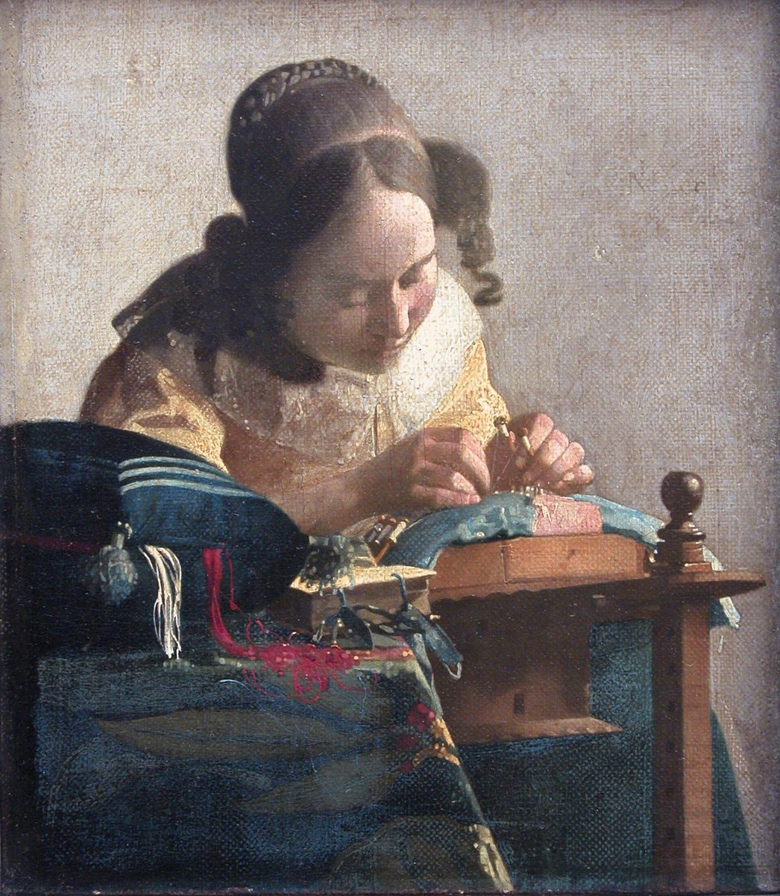

Hidden in the Frame · Louvre Museum, Paris
The Lacemaker
Johannes Vermeer · c. 1669–70 · Oil on canvas mounted on panel, 24.5 × 21 cm · Room 837 (Richelieu wing, level 2)

The story
After the giant canvases on the first floor comes the opposite: Vermeer's smallest painting, hardly bigger than a sheet of A4. A young woman bends over her bobbin lace and forgets the world. Renoir thought it the most beautiful painting in the world, and Salvador Dalí was obsessed with it: in 1955 he was allowed to copy it in the Louvre.
Details to look for
- Red and white threads spill out of the sewing cushion – but they aren't painted as threads at all. Vermeer sets them down as soft, almost liquid streams of paint. Up close they look like abstract painting.
- The threads between her fingers are completely different: hair-thin and razor-sharp. Exactly where she is looking, the picture comes into focus – like a photographer focusing on a single point.
- Her face is turned right down. She doesn't notice you. Because she is so absorbed, you can come very close without disturbing her.
- In front, the cushion with tassels and the carpet blur, as if photographed out of focus. Some believe Vermeer worked with a camera obscura – that isn't proven.
What it says
A picture about concentration: Vermeer shows not what she is doing, but what it feels like to be completely absorbed in one thing.
Open the full guide – zoom, audio guide, German & Japanese →